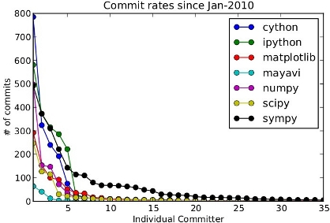

Somebody just sent an email on a user’s mailing list for an open-source scientific package entitled “Feature foo: why is package bar not up to the task?”. To quote him:
Is there ANY plan for having such a module in package bar?? I think (personally) that this is a MUST DO. This is typically the type of routines that I hear people use in e.g., idl etc. If this could be an optimised, fast (and easy to use) routine, all the better.
As some one who spends a fair amount of time working on open source software I hear such remarks quite often. I am finding it harder and harder not to react negatively to these emails. Now I cannot consider myself as a contributor to package bar, and thus I can claim that I am not taking your comment personally.
Why aren’t package not up to the task? Will, the answer is quite simple: because they are developed by volunteers that do it on their spare time, late at night too often, or companies that put some of their benefits in open source rather in locking down a market. 90% of the time the reason the feature isn’t as good as you would want it is because of lack of time.
I personally find that suggesting that somebody else should put more of the time and money they are already giving away in improving a feature that you need is almost insulting.
I am aware that people do not realize how small the group of people that develop and maintain their toys is. Borrowing the figure below from Fernando Perez’s talk at Euroscipy, the number of people that do 90% of the grunt work to get the core scientific Python ecosystem going is around two handfuls:
I’d like to think that this recruitment problem is a lack of skill set: users that have the ability to contribute are just too rare. This is not entirely true, there are scores of skilled people on the mailing lists. The poster himself mentioned his email that he was developing a package. I personally started contribution not knowing anything about software development. I struggled, I did the grunt work like maintaining wikis, answer questions on mailing list, and writing documentation. These easier tasks were useful to the community, I think, but must importantly, they taught me a lot because I was investing energy in them.
Note
If people want things to improve, they will have more successes sending in pull requests than messages on mailing list that sound condescending to my ears.
I hope that I haven’t overreacted too badly :), that email turned me on. That said, I am not sure that people realize how much they owe to the open source developers breaking their backs on the packages they use.

All credit for images goes to Fernando Perez
Go Top